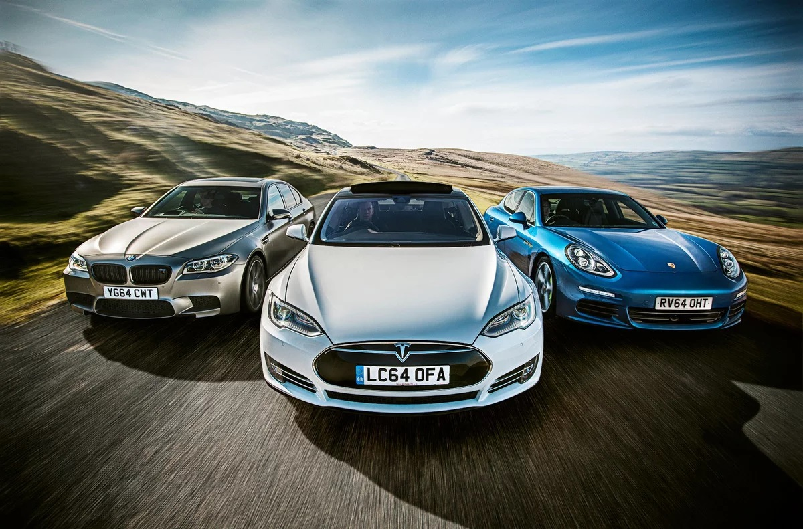

Электромобиль или машина на бензине: что выбрать
Большинству граждан России не до забот об экологии — с насущными проблемами бы разобраться. Однако у электромобилей, на которые постепенно пересаживаются автовладельцы в развитых странах мира, есть и другие интересные аспекты. Например, большая долговечность, в отличие от сомнительной экологичности. Подробное исследование Университета Торонто (США) позволило сравнить электрокар и обычный бензиновый кроссовер, и результаты получились любопытные.
Электромобиль и ДВС: Вред для здоровья
В рамках исследования сравнивались выбросы парниковых газов двух самых популярных автомобилей в своих классах. А если точнее, то речь идёт о батарейном электрическом седане Tesla Model 3 (Standart Range Plus) и бензиновом кроссовере Toyota RAV4 (двигатель 2,5 литра, передний привод): от производства до эксплуатации. Вывод — электромобили действительно безопаснее для экологии. Однако не без оговорок. Чтобы подсчитать влияние каждого автомобиля на окружающую среду, исследователи анализировали данные из открытых источников по выбросам углекислого газа при производстве как самих машин, так и необходимых для их работы расходных материалов (например, моторного масла).

Электромобиль и ДВС: Долговечность
Стоит заметить, что здесь начинает играть важную роль еще один аспект электромобилей — их большая потенциальная долговечность. Ресурс моторов Tesla превышает миллион миль, батареи, по разным оценкам, тоже легко способны перешагнуть через эту черту без существенной потери своих характеристик. То есть в тот момент, когда бензиновая машина, скорее всего, потребует капитального ремонта, электромобиль все еще будет полностью исправен, разве что обивка салона да кузовные панели износятся.
Электромобиль и ДВС: Стоимость владения
Что интересно, к ста тысячам миль полная стоимость владения обеих машин, с учетом покупки, заправки или зарядки и техобслуживания, будет примерно одинаковой: $33 500 для RAV4 и $34 800 для Model 3.
 Вернуться к началу страницы
Вернуться к началу страницы
Автор: Синицкий Артур, Группа: ГИ-21